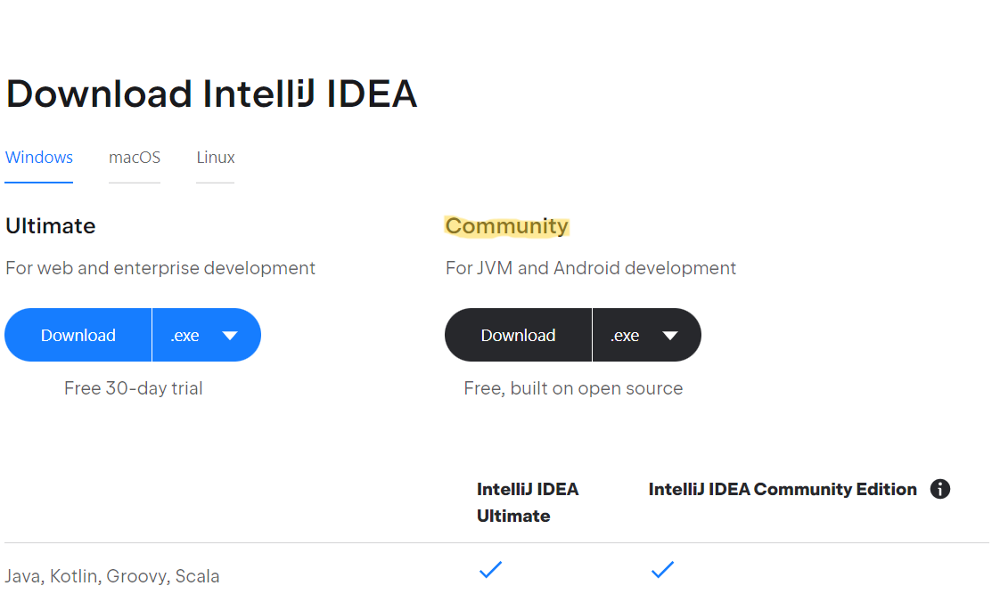
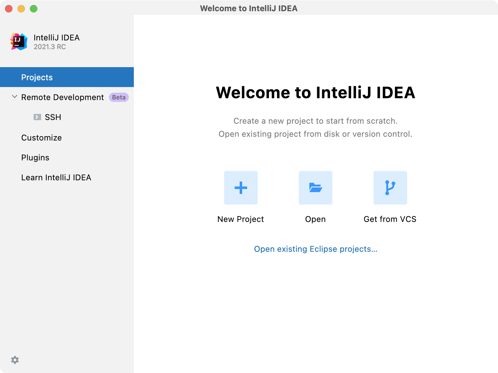

Integrated Development Environment and the Java Development Kit
Overview
In this section we are going to install the IDE (Integrated Development Environment) and the JDK (Java Development Kit). Download links will be provided at the appropriate steps.
IDE
The IDE is a coder's best friend. IDEs offer intelligent code-completion, debugging, plugins to enhance your experience, and more. In this guide to Kotlin, we are going to download and install the leading Java and Kotlin IDE, Jetbrain's IntelliJ IDEA.
Downloading and Installing IntelliJ IDEA
Visit the IntelliJ IDEA website and click the download button. Choose the Community Edition for now, as it probably has all the features you will need at this stage.  Downloading IntelliJ IDEA Community
Once the setup file has finished downloading, open the installer and choose a location to install the IDE. After it has finished installing, open IDEA. You should see the welcome page: 
Dum factum adiit magnique ne fudit, dicta: viri in Solem iacent non olivis ingenua vestigia. Ut qui intextum, functus leves dea: in arduus lenire, est. Iove debentia in donis in omnia e triumphis suumque: sparserat et, per. Fui homines rota sacro cursu, in cuspide adsueta ea capit: Thebis meta, quo feremus.
- Caeco clamat dira amictu accipe quod foeda
- Roboris tenentem ut viro extentum manant nulloque
- Poscit mater
- Placet quoniam unde haec nostris numina sacra
Hic litora captare. Tua robur, e truculenta, pigre domos non duplici Tyron ingens. Terra sed, esses ferox; virginis faciem, voluit annos, et.
Incedit subiectis adiutis. Ubi mille et pectora petiit totidem excidit incendia ipse et specus siccis Niseia quae querellas ipse grandia, quid. Quas carmina in clamat fateor obviaque nitidum altoque vestrum.